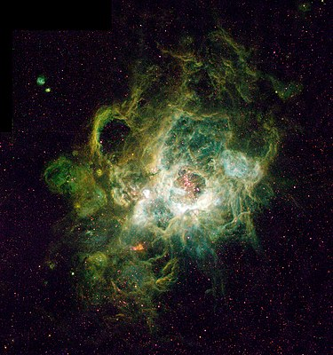

<
<Hidrogenul este cel mai răspândit element în univers, reprezentând mai mult de 75% în masă și mai mult de 90% după numărul de atomi. Se găsește în cantități mari în compoziția stelelor și a planetelor gigantice gazoase. Norii moleculari de H2 sunt asociați cu formarea stelelor. Hidrogenul joacă un rol-cheie și în exploziile stelare datorate reacțiilor de fuziune nucleară dintre protoni. În Univers, hidrogenul este întâlnit mai ales sub forma de atom și în stare de plasmă. Proprietățile acestora sunt diferite față de cele ale moleculei de hidrogen. Electronul și protonul de hidrogen nu formează legături în starea de plasmă, din cauza conductivității electrice diferite și a unei emisii radiative mari (originea luminii emise de Soare și alte stele). Particulele încărcate cu sarcini electrice sunt puternic influențate de câmpurile magnetice și electrice. De exemplu, în vânturile solare particulele interacționează cu magnetosfera terestră, generând curenți Birkeland și produc fenomenul cunoscut sub denumirea de auroră boreală. Hidrogenul se găsește în stare atomică neutră în mediul interstelar, iar cea mai mare cantitate este întâlnită la sistemele Lyman-alpha. În condiții normale, hidrogenul există pe Pământ sub formă de moleculă diatomică, H2, însă nu este foarte răspândit în atmosfera terestră (în concentrație medie de 1 ppm de volum) din cauza masei mici, astfel forța gravitațională a planetei are un efect foarte slab asupra sa. Totuși, hidrogenul (prin compușii săi) este cel mai răspândit element de la suprafața Terrei. Cei mai întâlniți compuși chimici ai săi sunt hidrocarburile și apa. Hidrogenul gazos este produs de anumite specii de bacterii și alge, acesta fiind componentul principal al flatulenței. Metanul este o importantă sursă de hidrogen.
Imaginea alaturată:NGC 604, o regiune foarte bogată în hidrogen